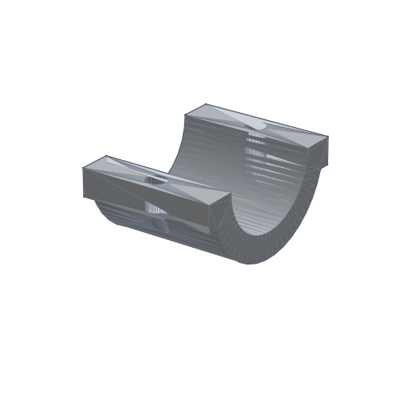
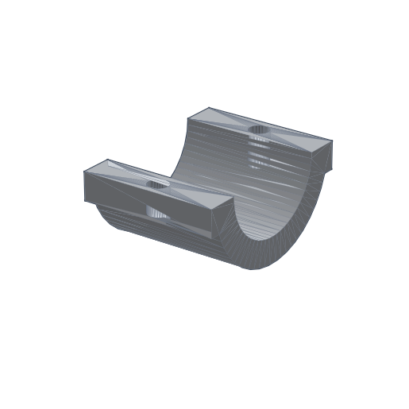

结论一：这不是语法替换，而是契约替换
保留下来的，是原有迭代运行时、benchmark 入口、artifact 布局和 `planner → write tool → validator → repair` 主循环。真正被替换的，是底层建模契约： 从旧的 CadQuery 风格链式状态，切到 Build123d 的显式 `Plane / BuildPart / Locations / Mode.*` 语义。
这份页面把最近三天的工作收成一条可以独立阅读的主线：先把底层建模表面从 CadQuery 风格契约切到 Build123d 风格契约，再把提示、技能、写前校验、验证收口、 benchmark 报表和演示材料全部接到同一套几何语义上。
核心判断只有一句话：这次改动的意义，不是把 `execute_cadquery` 机械改名成 `execute_build123d`，而是把原来依赖隐含 workplane 状态和脆弱布尔顺序的建模过程， 改造成一套运行时可以看懂、可以拦截、可以修复、可以验证、可以复盘的显式契约。
这页最重要的任务，是把“改了什么”“为什么要这样改”“改动是怎么在流程里起作用的”“到哪里看证据”讲清楚。
保留下来的，是原有迭代运行时、benchmark 入口、artifact 布局和 `planner → write tool → validator → repair` 主循环。真正被替换的，是底层建模契约： 从旧的 CadQuery 风格链式状态，切到 Build123d 的显式 `Plane / BuildPart / Locations / Mode.*` 语义。
收益不是抽象口号，而是几个可以直接打开目录验证的结果：`L2_172` 证明局部坐标阵列可以一轮写成；`L1_218` 证明运行时能把错误路径拉回共享修复面； `L2_88` 证明一次通用规则可以解锁整个 revolve family；`L1_122` 证明 validator/read-stall 问题已经能被收回单轮闭环。
Build123d 还没有在所有 benchmark 上全面超过 CadQuery。当前仍有两个明显缺口： `L2_130` 代表的 half-shell + directional hole 家族，以及外部 enclosure prompt 所代表的 body/lid/cavity/lip 组合推理。好消息是，问题已经越来越少表现为“代码根本跑不通”， 而是收敛为更具体的几何和验证契约问题。
如果只需要一句管理层摘要，可以直接使用这句话： Build123d 迁移已经证明了它对运行时工程的价值，关键优势是让几何行为更显式、错误更可拦截、 修复更可复用、证据更可复盘。
用三天时间把散点工作收成同一条主线，避免“今天补一点 prompt，明天补一点 case”的碎片化推进。
关键目录：benchmark/runs/20260413_102600/L2_172、
benchmark/runs/20260413_141000/L1_218、
test_runs/20260413_094502
关键目录：benchmark/runs/20260414_091747、
benchmark/runs/20260414_130005/L2_88、
report-20260414-build123d-vs-cadquery-benchmark/
关键目录：benchmark/runs/20260415_205500/L1_122、
docs/work_logs/2026-04-15.md、
docs/cad_iteration/CANONICAL_BASELINE.md
src/sub_agent/prompts/codegen.md把 Build123d 合法写法、builder 归属、局部平面和孔位约束前置到首轮写模提示里。
src/sub_agent_runtime/skill_pack.py把“什么是更安全的 first-pass skeleton”“什么时候该走哪条 repair lane”沉淀成可复用 guidance。
src/sub_agent_runtime/tool_runtime.py把常见错法前置成确定性的写前校验，让错误先以结构化规则出现，再进入修复，而不是先炸 sandbox。
src/sub_agent_runtime/agent_loop_v2.py控制写后关闭策略，避免 repeated validation、无意义 probe 和 read-stall 把回合预算消耗掉。
docs/cad_iteration/*.md把已经生效的 runtime 约束写成公开文档，确保 benchmark、代码和说明页使用同一套口径。
下面这五步，是 Build123d 迁移真正影响运行时行为的地方。每一步都对应代码路径和真实 case。
通过 src/sub_agent/prompts/codegen.md 和
src/sub_agent_runtime/skill_pack.py，
首轮不再默认沿用旧的 workplane 链式心智，而是优先使用 `BuildPart`、`BuildSketch`、`Plane`、`Locations`
和 `Mode.*` 这些显式对象。
看点：benchmark/runs/20260413_102600/L2_172/plans/round_01_response.json
的 `decision_summary` 已经明确写出“先做 corner-frame 到 centered host frame 的映射”。
当模型仍然会猜错 Build123d API、helper、关键字或 builder 上下文时，
src/sub_agent_runtime/tool_runtime.py 会在真正执行前拦下这些错误，
返回明确的 `rule_id`、`repair_hint` 和推荐 repair lane。
看点：test_runs/20260413_094502/actions/round_01_execute_build123d.json
里同时保留了 `failure_kind`、`lint_hits` 和 `repair_recipe`。
以前的主要问题是“写了一个几何体，但不知道自己做没做对”；现在写成功后会立刻进入 `validate_requirement`，必要时再进入 `query_feature_probes`，把“哪一类 family 还没满足”明确出来。
看点：benchmark/runs/20260413_141000/L1_218/queries/round_04_query_feature_probes.json
直接把问题缩小到 `annular_groove` 家族。
当失败已经被缩小到具体 family，运行时会退出泛泛的重写，改走更窄的 repair lane。 这就是为什么 `L1_218` 的后半程开始显式改用 annular-band subtraction，而不是继续盲猜 revolve 写法。
看点：benchmark/runs/20260413_141000/L1_218/plans/round_05_response.json
的 `decision_summary`。
成功与失败都会落成完整的 run 目录：`prompts/`、`plans/`、`actions/`、`queries/`、`trace/`、 `outputs/`、`evaluation/`。4/15 之后，这些目录还会同时输出统一 baseline 指标， 方便做 canary 回归。
看点：benchmark/runs/20260415_205500/brief_report.md 和
run_diagnostics.md 里的 `baseline_metrics`。
L2_172/plans/round_01_response.json
test_runs/20260413_094502/actions/round_01_execute_build123d.json
L1_218/queries/round_04_query_feature_probes.json
benchmark/runs/20260415_205500/brief_report.md
这部分是整页最重要的证据面。每张卡只聚焦一个问题，并把最值得打开的文件直接写出来。
test_runs/20260413_094502这个目录证明的不是“外部 enclosure 已经做完”，而是“未知 prompt 的失败已经开始被结构化”。 首轮没有消失在黑盒报错里，而是被明确归类成 Build123d 写前校验失败，并返回可复用的修复 recipe。
actions/round_01_execute_build123d.jsonfailure_kind=execute_build123d_api_lint_failurelegacy_api.countersink_workplane_methodexplicit_anchor_hole_countersink_array_safe_recipetrace/events.jsonl这说明 Build123d 迁移已经不只是“能不能建出几何”，而是开始具备“遇到未知 prompt 也能留下有教学价值的失败面”。
benchmark/runs/20260413_102600/L2_172这个目录证明 Build123d 对局部坐标阵列的帮助已经能直接落到真实 case： 板件、四个沉头孔、角点坐标到中心坐标的映射，都在一轮内完成。
benchmark/runs/20260413_102600/brief_report.md 中 `L2_172 | PASS | rounds=1 | score=0.8565`plans/round_01_response.json 写明“把 corner-based 坐标映射到 centered host frame”actions/round_01_execute_build123d.json 记录了 solids=1、bbox=[100,60,8]benchmark/runs/20260413_102600/run_diagnostics.md 显示 `end_to_end_pass_cases=['L2_172']`这张卡证明的是：当问题本质是显式坐标变换时，Build123d 的 `Plane + Locations` 表面已经足够强，运行时可以在首轮把它说清楚、写出来并落成结果。
benchmark/runs/20260413_141000/L1_218这个目录证明 Build123d 迁移的价值不只是一轮命中率。真正更重要的是：系统能把错误路径收束到共享 family， 再从 probe 结果回到更窄的修复 lane。
benchmark/runs/20260413_141000/brief_report.md 中 `PASS | rounds=5 | writes=4 | probes=1`queries/round_04_query_feature_probes.json 里 `annular_groove: 0/4 relevant checks currently pass`plans/round_05_response.json 明确改走 annular-band subtractionqueries/round_05_validate_requirement_post_write.json 返回 `Requirement validation passed`trace/round_digest.md这张卡证明的是：Build123d 迁移让“先查明是哪个 family 没满足，再走更窄的修复面”成为可能，而不是在多轮里重复重写。
benchmark/runs/20260414_130005/L2_88这个目录是“Build123d 远期天花板更高”最硬的一条证据链。因为它证明：不是改 prompt 运气变好， 而是明确补了通用规则后，同一个 revolve family 的 fresh run 直接从失败变成一轮满分。
benchmark/runs/20260414_093041/L2_88 8 轮未收敛，卡在 `revolve` / `BuildLine` 契约错误benchmark/runs/20260414_130005/brief_report.md 中 `PASS | rounds=1 | score=1.0000 | tokens=4462`plans/round_01_response.json 明确采用 explicit revolve profile recipequeries/round_01_validate_requirement_post_write.json 返回 `Requirement validation passed`evaluation/benchmark_eval.json 记录 `difference_notes=[\"STEP geometric signatures are closely aligned\"]`这张卡证明的是：一条写进产品代码的共享规则，已经可以改善整个 family，而不是只修一个锚点 case。
benchmark/runs/20260415_205500/L1_122这个目录用来说明最近两天最现实的问题：写出几何以后，系统能不能稳定判断自己已经做对， 而不是卡在 repeated validation、insufficient evidence 或 read-stall。
benchmark/runs/20260415_205500/brief_report.md 里的 `baseline_metrics`first_solid_success_rate=1.0、requirement_complete_rate=1.0、tokens_per_successful_case=4888.0trace/round_digest.md 显示 `stop_reason=post_write_validated_complete`、`planner_rounds=1`plans/round_01_response.json 明确识别为 top-face slot / U-shaped channelqueries/round_01_validate_requirement_post_write.json 返回 `Requirement validation passed`这张卡证明的是：Build123d 项目现在不仅能生成几何，也开始能把“做对了”稳定地收口成一轮结束。
这部分不做抽象概念说明，只展示“当前已经做对的样子”和“当前还没收口的差异长什么样”。
左图是当前 Build123d 生成结果，右图是 benchmark 标准答案。这个 case 最值得讲的不是“孔开出来了”， 而是“局部坐标映射已经进入了首轮决策逻辑”。
关联目录：benchmark/runs/20260413_102600/L2_172


这一组图最适合说明“为什么健康的 repair lane 比一次侥幸写对更重要”。 运行时先把 family 缩到 annular groove，再把写法收束到更稳定的 annular-band subtraction。
关联目录：benchmark/runs/20260413_141000/L1_218


这组图用来诚实展示当前边界。Build123d 版本已经不再主要卡在 API 猜错，但 half-shell 的轮廓组织、 directional hole 的平面语义、局部孔位对齐仍然没有完全收口。
关联目录：benchmark/runs/20260414_091747/L2_130 与
/Users/jerryx/code/aicad.subagent.iteration/benchmark/runs/20260414_091748/L2_130



下面三组 demo 不是临时拼出来的示意代码，而是直接对应上面几个真实 family 和 run 目录。
demos/build123d_foundations/demo_local_frame_countersink.py
uv run python demos/build123d_foundations/demo_local_frame_countersink.pydemos/build123d_foundations/artifacts/demo_01_local_frame_countersink.stepbenchmark/runs/20260413_102600/L2_172demos/build123d_foundations/demo_half_shell_directional_holes.py
uv run python demos/build123d_foundations/demo_half_shell_directional_holes.pydemos/build123d_foundations/artifacts/demo_02_half_shell_directional_holes.stepbenchmark/runs/20260413_142700/L2_130demos/build123d_foundations/demo_enclosure_body_lid.py
uv run python demos/build123d_foundations/demo_enclosure_body_lid.pydemo_03_enclosure_body.step 与 demo_03_enclosure_lid.steptest_runs/20260413_094502最容易讲清楚的顺序是：先展示 Demo A 的局部坐标，再展示 Demo B 的半壳体和定向孔位， 最后用 Demo C 说明“容器到底怎么改造”这个问题。这样从最小特征、到共享 family、再到复杂容器，逻辑最连贯。
uv run python demos/build123d_foundations/run_all.py
会统一生成 4 个 STEP 和一个 demos/build123d_foundations/artifacts/summary.json。
这个 `summary.json` 里已经整理好了每个 demo 的 `title`、`narrative`、`talking_points`、`bbox` 和 `step_path`，
适合直接当讲稿提纲使用。
这部分专门说明“在哪里能找到相关证据”。建议按下面顺序打开，不要从目录树盲翻。
prompts/看模型实际收到的 requirement、runtime skill 和当前回合上下文。
代表文件：benchmark/runs/20260415_205500/L1_122/prompts/round_01_user_prompt.txt
plans/看这一轮为什么这么做，尤其是 `decision_summary` 和工具选择。
代表文件：benchmark/runs/20260413_102600/L2_172/plans/round_01_response.json
actions/看写模是否成功，失败是被哪条规则拦下，成功后几何体长什么样。
代表文件：test_runs/20260413_094502/actions/round_01_execute_build123d.json
queries/看 validator 和 feature probe 对当前模型的判断，知道系统下一步为什么继续修或直接结束。
代表文件：benchmark/runs/20260413_141000/L1_218/queries/round_04_query_feature_probes.json
trace/看整条回合链是怎样收口的，尤其适合解释 stop reason、回合预算和 policy 变化。
代表文件：benchmark/runs/20260415_205500/L1_122/trace/round_digest.md
outputs/看最终 STEP 和几何信息；这一步证明系统不是只会说，而是真的落成了模型。
代表文件：demos/build123d_foundations/artifacts/summary.json
evaluation/看 benchmark 对比结果，包括分数、差异说明和通过与否。
代表文件：benchmark/runs/20260414_130005/L2_88/evaluation/benchmark_eval.json
brief_report / run_diagnostics看一个 run 的聚合结论，是最适合快速汇报的总览入口。
代表文件：benchmark/runs/20260415_205500/brief_report.md、
benchmark/runs/20260415_205500/run_diagnostics.md
最后的结论必须同时包含进展和边界，避免只报喜不报忧，也避免把未完成的事情说成已经完成。
用于汇报的最简结论可以压缩成这样： Build123d 迁移的真正价值，不是“换了个建模库”，而是把原来隐含、脆弱、难验证的几何行为， 改造成显式、可拦截、可修复、可验证、可复盘的运行时契约。